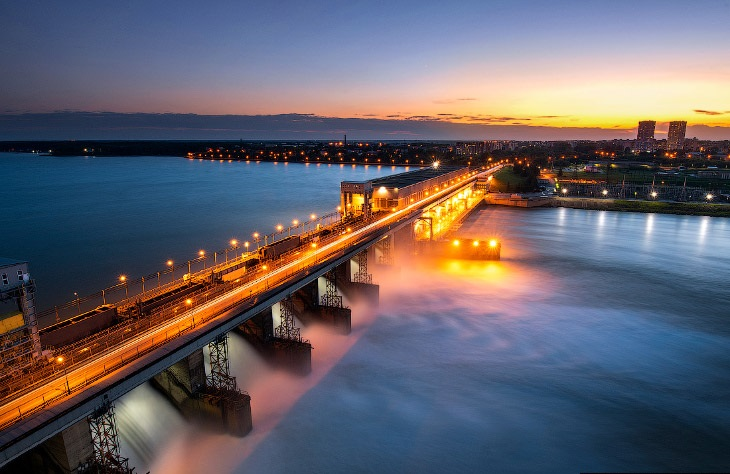
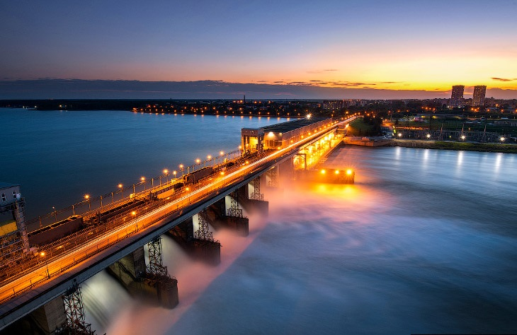

Альтернативные источники энергии.
Нужны ли они нам?
Альтернативные источники энергии. Что это?
Альтернати́вная энерге́тика — совокупность перспективных способов получения, передачи и использования энергии (зачастую — из возобновляемых источников), которые распространены не так широко, как традиционные, однако представляют интерес из-за выгодности их использования при, как правило, низком риске причинения вреда окружающей среде.
Что значит возобновляемые источники?
Возобновляемая, или регенеративная, «зелёная», энергия — энергия из энергетических ресурсов, которые являются возобновляемыми или неисчерпаемыми по человеческим масштабам. Основной принцип использования возобновляемой энергии заключается в её извлечении из постоянно происходящих в окружающей среде процессов или возобновляемых органических ресурсов и предоставлении для технического применения.
Какие есть виды альтернативных источников энергии?
Ветроэнергетика:
- Автономные ветрогенераторы;
- Ветрогенераторы, работающие параллельно с сетью.
Биотопливо:
- Жидкое: Биодизель, биоэтанол;
- Твёрдое: древесные отходы и биомасса;
- Газообразные: биогаз, синтез-газ.
Гелиоэнергетика (солнечная энергия):
- Солнечный коллектор;
- Энергетическая башная, совмещает солнечную и ветроэнергетику;
- Фотоэлектрические элементы;
- Наноантенны.
Гидроэнергетика:
- Приливные электростанции;
- Волновые электростанции;
- Мини и микро ГЭС (устанавливаются в малых реках);
- Аэро ГЭС (конденсация влаги из атмосферы, в том числе из облаков).
 
